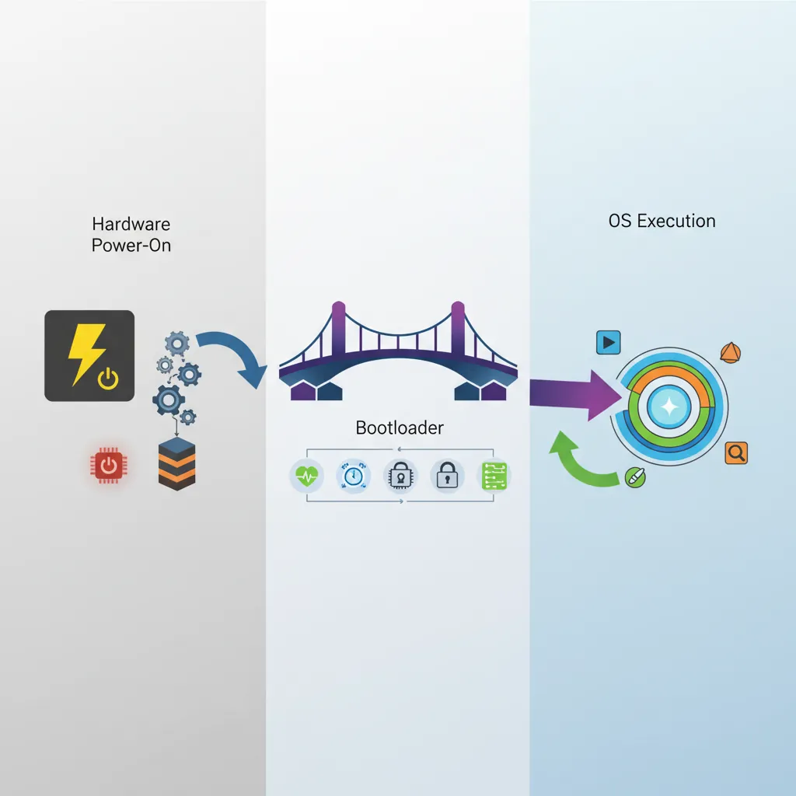
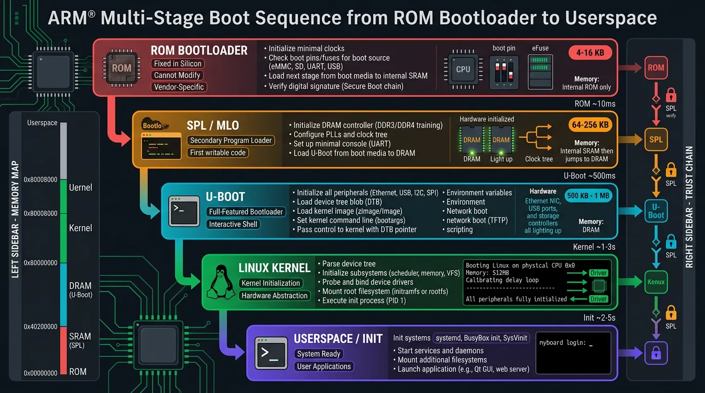
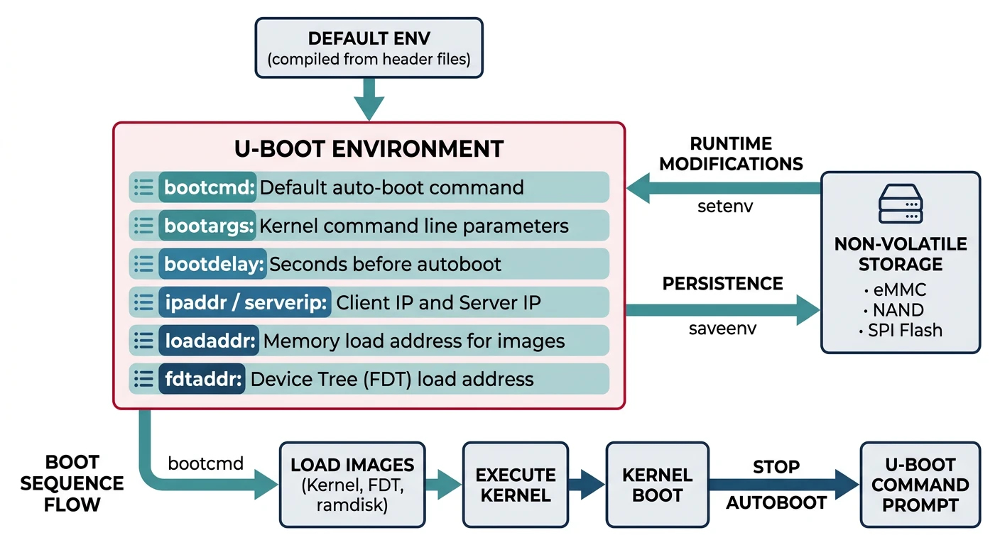
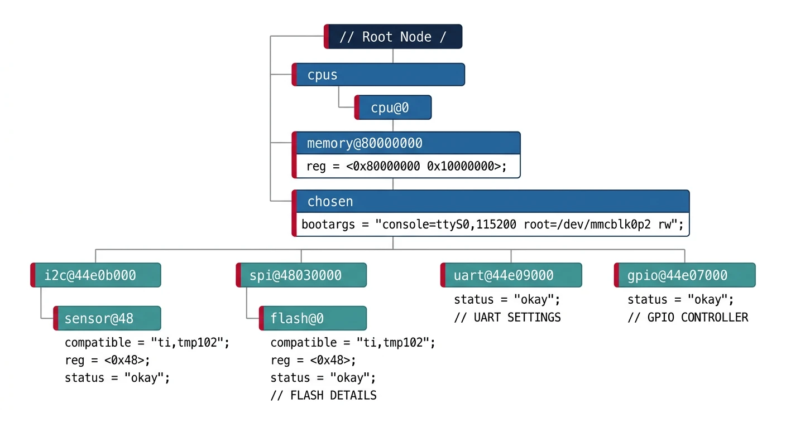
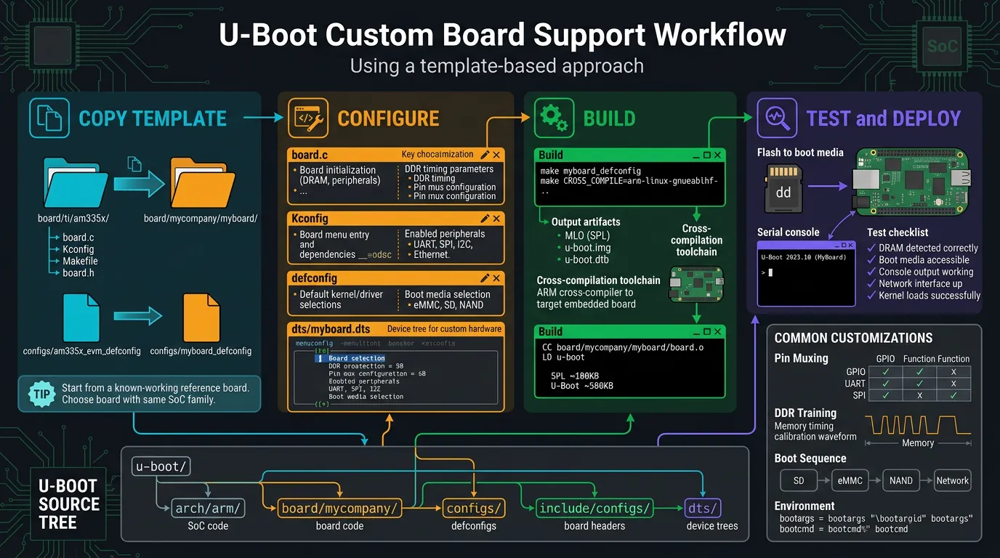

Introduction to Bootloaders
Embedded Systems Mastery
Fundamentals & Architecture
Microcontrollers, memory, interruptsSTM32 & ARM Cortex-M Development
ARM architecture, peripherals, HALRTOS Fundamentals (FreeRTOS/Zephyr)
Task management, scheduling, synchronizationCommunication Protocols Deep Dive
UART, SPI, I2C, CAN, USBEmbedded Linux Fundamentals
Linux kernel, userspace, filesystemU-Boot Bootloader Mastery
Boot process, configuration, customizationLinux Device Drivers
Character, block, network driversLinux Kernel Customization
Kernel configuration, modules, debuggingAndroid System Architecture
Android layers, services, frameworkAndroid HAL & Native Development
HAL interfaces, NDK, JNIAndroid BSP & Kernel
BSP development, kernel integrationDebugging & Optimization
JTAG, GDB, profiling, optimizationAUTOSAR & EB Tresos
AUTOSAR architecture, MCAL, MPU protectionA bootloader is the first software that runs when a system powers on. It initializes hardware (RAM, clocks, peripherals), loads the operating system kernel into memory, and transfers control to it. U-Boot (Das U-Boot) is the most widely used bootloader in embedded Linux systems.

Why Bootloaders Matter
- Hardware initialization: Configure clocks, memory controllers, GPIOs
- Flexibility: Choose which OS to boot, from where (flash, SD, network)
- Recovery: Provide a fallback if the OS fails to boot
- Development: Load kernels over network (TFTP), debug early boot
- Security: Verify kernel signatures (secure boot)
Boot Process Architecture
ARM systems typically use a multi-stage boot process:

ARM Boot Stages
- ROM Bootloader (BL0): Burned into chip, loads SPL from boot device
- SPL (Secondary Program Loader): Initializes DRAM, loads full U-Boot
- U-Boot (BL2): Full bootloader—loads kernel, DTB, passes control
- Linux Kernel: Decompresses, initializes drivers, mounts root filesystem
- Init (PID 1): First userspace process, starts services
Power On
│
▼
+-----------------+
│ ROM Bootloader │ → Fixed in silicon, reads boot pins
│ (on-chip) │ → Loads SPL from SD/eMMC/SPI/UART
+-----------------+
│
▼
+-----------------+
│ U-Boot SPL │ → Runs from internal SRAM (~128KB)
│ (MLO/SPL.bin) │ → Initializes DRAM controller
+-----------------+
│
▼
+-----------------+
│ U-Boot │ → Full bootloader in DRAM
│ (u-boot.bin) │ → Environment, commands, boot scripts
+-----------------+
│
▼
+-----------------+
│ Linux Kernel │ → zImage/Image + DTB loaded to DRAM
│ + Device Tree │ → U-Boot jumps to kernel entry point
+-----------------+
│
▼
+-----------------+
│ Root Filesystem │ → Kernel mounts rootfs, runs init
│ (rootfs) │
+-----------------+
Why ROM Can’t Load U-Boot to DDR Directly
A frequently asked question in embedded Linux BSP development is: Why can’t the ROM Boot Loader (RBL) of an ARM SoC like the AM335x skip the SPL stage and load U-Boot directly into DDR RAM? The answer lies in a fundamental hardware reality—DDR RAM is board-specific, not chip-specific.
flowchart TD
ROM["Boot ROM\n(SoC Internal)"] --> SPL["SPL\n(Secondary Program Loader)"]
SPL --> DRAM["Initialize DRAM"]
DRAM --> UBOOT["U-Boot Proper\n(Full Bootloader)"]
UBOOT --> ENV{"Environment\nVariables"}
ENV -->|"bootcmd"| LOAD["Load Kernel + DTB\nfrom eMMC/SD/TFTP"]
LOAD --> KERNEL["Linux Kernel\n(Image/zImage)"]
KERNEL --> ROOTFS["Root Filesystem\n(initrd/rootfs)"]
DDR Is Board-Specific, Not Chip-Specific
Consider three companies (X, Y, Z) all designing products with the same TI AM335x SoC:
Same Chip, Different DDR Configurations
| Company | Product | DDR Type | DDR Manufacturer | Example Part |
|---|---|---|---|---|
| X | Industrial gateway | DDR3 | Micron | MT41K256M16HA |
| Y | HMI display panel | DDR2 | Transcend | TS64MLS64V6F |
| Z | Simple sensor node | None | — | Uses only on-chip 64KB SRAM |
Each DDR chip has unique tuning parameters—CAS latency, tRCD, tRP, tRAS, clock speed, bandwidth, size, number of ranks, and on-die termination settings. These values come from the DDR manufacturer’s datasheet and must be programmed into the SoC’s EMIF (External Memory Interface) registers before a single byte can be read from or written to DDR.
What the ROM Boot Loader Actually Does
Since the RBL cannot initialize DDR, it does only what it can do with hardware it knows about—the on-chip internal SRAM:
- Reads boot pin configuration (SYSBOOT pins) to determine the boot device order (SD card, eMMC, SPI, UART, USB, Ethernet)
- Searches for the SPL binary (called
MLOon TI platforms) on the selected boot device - Loads the SPL into on-chip SRAM (~128KB on AM335x at address
0x402F0400)—this is the only memory available at this stage - Jumps to the SPL entry point to hand off control
What the SPL Must Do
The SPL (Secondary Program Loader) is the first piece of user-modifiable code that runs on the SoC. Its primary job is DDR initialization:
- Configure PLLs and clocks for the DDR controller
- Set DDR PHY parameters—read/write DQS ratios, FIFO settings, leveling values
- Program EMIF timing registers—tRCD, tRP, tRAS, tRFC, refresh rate, all from the DDR chip’s datasheet
- Configure SDRAM type, size, and bank mapping
- Run hardware leveling (if supported) to calibrate signal delays on the PCB traces
- Load U-Boot from boot device into DDR (now accessible)
- Jump to U-Boot entry point in DDR
// SPL DDR3 initialization for BeagleBone Black (AM335x)
// File: board/ti/am335x/board.c in U-Boot source tree
#include <asm/arch/ddr_defs.h>
#include <asm/arch/sys_proto.h>
// Kingston DDR3L timing parameters (from chip datasheet)
static const struct ddr_data ddr3_bbb_data = {
.datardsratio0 = MT41K256M16HA125E_RD_DQS,
.datawdsratio0 = MT41K256M16HA125E_WR_DQS,
.datafwsratio0 = MT41K256M16HA125E_PHY_FIFO_WE,
.datawrsratio0 = MT41K256M16HA125E_PHY_WR_DATA,
};
static const struct emif_regs ddr3_bbb_emif = {
.sdram_config = MT41K256M16HA125E_EMIF_SDCFG,
.ref_ctrl = MT41K256M16HA125E_EMIF_SDREF,
.sdram_tim1 = MT41K256M16HA125E_EMIF_TIM1,
.sdram_tim2 = MT41K256M16HA125E_EMIF_TIM2,
.sdram_tim3 = MT41K256M16HA125E_EMIF_TIM3,
.zq_config = MT41K256M16HA125E_ZQ_CFG,
.emif_ddr_phy_ctlr_1 = MT41K256M16HA125E_EMIF_READ_LATENCY,
};
// Called by SPL early in boot
void sdram_init(void) {
config_ddr(400, // DDR clock: 400 MHz
&ddr3_bbb_ioctrl, // I/O control settings
&ddr3_bbb_data, // DDR PHY data
&ddr3_bbb_cmd_ctrl, // DDR command control
&ddr3_bbb_emif, // EMIF timing registers
0); // Board revision
}
Changing DDR for a Custom Board
If you design a custom board using the AM335x but with a different DDR3 chip (e.g., Transcend instead of Kingston), you must:
- Obtain the DDR datasheet from the new manufacturer
- Extract timing parameters—tRCD, tRP, tRAS, tRFC, CAS latency, write recovery time
- Update the DDR header macros in
include/configs/or the board-specific header file - Modify the board file (
board/ti/am335x/board.cor your custom board directory) - Rebuild SPL to generate a new
MLObinary with your DDR parameters - Test thoroughly—run memory stress tests (
mtestin U-Boot,memtesterin Linux)
// Example: Changing DDR3 params for a Transcend DDR3 chip
// File: include/configs/custom_am335x.h
// Original BeagleBone Black (Kingston MT41K256M16HA-125)
// #define MT41K256M16HA125E_EMIF_TIM1 0x0AAAD4DB
// #define MT41K256M16HA125E_EMIF_TIM2 0x266B7FDA
// #define MT41K256M16HA125E_EMIF_TIM3 0x501F867F
// New Transcend DDR3 chip (from datasheet)
#define CUSTOM_DDR3_EMIF_TIM1 0x0AAAE4DB // Different tRCD
#define CUSTOM_DDR3_EMIF_TIM2 0x266B7FDA // Same tRTP, tWR
#define CUSTOM_DDR3_EMIF_TIM3 0x501F867F // Same tRFC
#define CUSTOM_DDR3_EMIF_SDCFG 0x61C05332 // 512MB, 16-bit bus
#define CUSTOM_DDR3_EMIF_SDREF 0x0000093B // Refresh rate
#define CUSTOM_DDR3_ZQ_CFG 0x50074BE4
#define CUSTOM_DDR3_READ_LATENCY 0x100007 // PHY read latency
Boot Flow Summary: Why SPL Exists
===================================
ROM Bootloader (on-chip, fixed)
│
│ → Cannot init DDR (doesn't know what DDR is connected)
│ → Only has access to on-chip SRAM (~128KB)
│ → Loads SPL/MLO from SD/eMMC/SPI/UART into SRAM
│
▼
SPL (runs from SRAM, user-built)
│
│ → YOU configure DDR type, timing, and size in SPL code
│ → SPL initializes DDR controller + DDR PHY
│ → DDR RAM is now accessible!
│ → SPL loads full U-Boot from boot device into DDR
│
▼
U-Boot (runs from DDR, full features)
│
│ → Loads kernel + DTB + rootfs into DDR
│ → Boots Linux
│
▼
Linux Kernel (runs from DDR)
U-Boot Architecture
# Clone U-Boot source
git clone https://source.denx.de/u-boot/u-boot.git
cd u-boot
# U-Boot source structure
u-boot/
+-- arch/ # Architecture-specific (arm, x86, riscv)
+-- board/ # Board-specific code (vendor/board/)
+-- cmd/ # U-Boot commands (boot, mmc, tftp)
+-- common/ # Common boot code
+-- configs/ # Default configurations (*_defconfig)
+-- drivers/ # Device drivers
+-- dts/ # Device tree sources
+-- include/ # Headers
+-- lib/ # Libraries (string, crc, etc.)
+-- scripts/ # Build scripts, Kconfig
# List available board configs
ls configs/ | grep -i beagle
# am335x_evm_defconfig (BeagleBone)
# am57xx_evm_defconfig (BeagleBoard-X15)
Building U-Boot
# Set cross-compiler
export CROSS_COMPILE=arm-linux-gnueabihf-
# Configure for BeagleBone Black
make am335x_evm_defconfig
# Optional: customize
make menuconfig
# Build
make -j$(nproc)
# Output files
ls -la MLO u-boot.img
# MLO → SPL (Secondary Program Loader)
# u-boot.img → Full U-Boot binary
Environment Configuration
U-Boot stores configuration in environment variables—persisted in flash/eMMC or set at runtime.

# At U-Boot prompt (connected via serial)
# Print all environment variables
=> printenv
# Key variables
bootcmd=run mmc_boot # Command executed on autoboot
bootargs=console=ttyO0,115200n8 root=/dev/mmcblk0p2 rootwait
bootdelay=3 # Seconds before autoboot
ipaddr=192.168.1.100 # Board's IP address
serverip=192.168.1.1 # TFTP server IP
loadaddr=0x82000000 # Where to load kernel
fdtaddr=0x88000000 # Where to load device tree
# Set a variable
=> setenv bootdelay 5
# Save to persistent storage
=> saveenv
# Create boot script
=> setenv mmc_boot 'mmc dev 0; fatload mmc 0 ${loadaddr} zImage; fatload mmc 0 ${fdtaddr} am335x-boneblack.dtb; bootz ${loadaddr} - ${fdtaddr}'
Device Tree Basics
The Device Tree (DT) describes hardware to the kernel—no hardcoded board info in kernel source. U-Boot passes the DTB (Device Tree Blob) to the kernel.

// Example device tree snippet (arch/arm/boot/dts/am335x-boneblack.dts)
/dts-v1/;
/ {
model = "TI AM335x BeagleBone Black";
compatible = "ti,am335x-bone-black", "ti,am33xx";
memory@80000000 {
device_type = "memory";
reg = <0x80000000 0x20000000>; /* 512MB DRAM */
};
leds {
compatible = "gpio-leds";
led0 {
label = "beaglebone:green:heartbeat";
gpios = <&gpio1 21 GPIO_ACTIVE_HIGH>;
linux,default-trigger = "heartbeat";
};
};
};
&uart0 {
status = "okay";
};
&i2c0 {
status = "okay";
clock-frequency = <400000>;
eeprom: eeprom@50 {
compatible = "atmel,24c256";
reg = <0x50>;
};
};
# Compile device tree
dtc -I dts -O dtb -o am335x-boneblack.dtb am335x-boneblack.dts
# Decompile (inspect binary DTB)
dtc -I dtb -O dts -o output.dts am335x-boneblack.dtb
# In kernel build
make ARCH=arm dtbs
U-Boot Commands
# Help system
=> help # List all commands
=> help boot # Help on specific command
# Memory commands
=> md 0x80000000 100 # Memory display (hex dump)
=> mw 0x80000000 0xDEADBEEF # Memory write
=> cp 0x80000000 0x81000000 1000 # Copy memory
# Storage commands
=> mmc list # List MMC devices
=> mmc dev 0 # Select MMC device 0
=> mmc info # Show MMC info
=> fatls mmc 0 # List files on FAT partition
=> fatload mmc 0 0x82000000 zImage # Load file to RAM
# Network commands
=> dhcp # Get IP via DHCP
=> ping 192.168.1.1 # Test connectivity
=> tftp 0x82000000 zImage # Download file via TFTP
# Boot commands
=> bootm 0x82000000 # Boot uImage format
=> bootz 0x82000000 - 0x88000000 # Boot zImage with DTB
=> boot # Execute bootcmd
Boot Methods (TFTP, NFS, MMC)
Network Boot (Development)
# On host: Setup TFTP server
sudo apt install tftpd-hpa
sudo cp zImage am335x-boneblack.dtb /srv/tftp/
# On U-Boot: Configure network boot
=> setenv ipaddr 192.168.1.100
=> setenv serverip 192.168.1.1
=> setenv netboot 'tftp ${loadaddr} zImage; tftp ${fdtaddr} am335x-boneblack.dtb; setenv bootargs console=ttyO0,115200n8 root=/dev/nfs nfsroot=${serverip}:/srv/nfs/rootfs,v3 ip=dhcp; bootz ${loadaddr} - ${fdtaddr}'
=> run netboot
SD Card Boot (Production)
# SD card layout (typical)
# Partition 1: FAT32 (boot) - MLO, u-boot.img, zImage, *.dtb
# Partition 2: ext4 (rootfs) - Linux root filesystem
=> setenv mmcboot 'mmc dev 0; fatload mmc 0:1 ${loadaddr} zImage; fatload mmc 0:1 ${fdtaddr} am335x-boneblack.dtb; setenv bootargs console=ttyO0,115200n8 root=/dev/mmcblk0p2 rootwait; bootz ${loadaddr} - ${fdtaddr}'
=> setenv bootcmd 'run mmcboot'
=> saveenv
Bootloader Customization

# Create custom board support
# 1. Copy existing similar board
cp -r board/ti/am335x board/mycompany/myboard
cp configs/am335x_evm_defconfig configs/myboard_defconfig
# 2. Edit board configuration
# board/mycompany/myboard/board.c - Board init code
# include/configs/myboard.h - Board config header
# 3. Create defconfig
# Edit configs/myboard_defconfig
CONFIG_ARM=y
CONFIG_TARGET_MYBOARD=y
CONFIG_DEFAULT_DEVICE_TREE="myboard"
CONFIG_BOOTDELAY=3
CONFIG_BOOTCOMMAND="run mmcboot"
# 4. Build
make myboard_defconfig
make -j$(nproc)
Debugging U-Boot
# Enable debug output in U-Boot config
=> setenv bootargs ... debug earlyprintk
# JTAG debugging (requires hardware debugger)
# OpenOCD + GDB for low-level debugging
# Serial console is your best friend
# Always connect serial before powering on
# Typical settings: 115200 baud, 8N1
# Common issues:
# - No output: Check serial connection, baud rate
# - Stuck at SPL: DRAM init failed, check timings
# - "Wrong Image Format": Use correct boot command (bootm vs bootz)
# - "Bad Linux ARM zImage magic": Kernel corrupted or wrong load address
Conclusion & What's Next
You've mastered U-Boot—the critical bridge between hardware power-on and Linux kernel execution. Understanding the boot process, environment variables, and device trees is essential for embedded Linux development.
- Boot stages: ROM → SPL → U-Boot → Kernel → Init
- SPL initializes DRAM, loads full U-Boot
- Environment variables control boot behavior
- Device Tree describes hardware to kernel
- Network boot (TFTP/NFS) accelerates development
In Part 7, we'll dive into Linux Device Drivers—writing kernel code to interface with custom hardware.